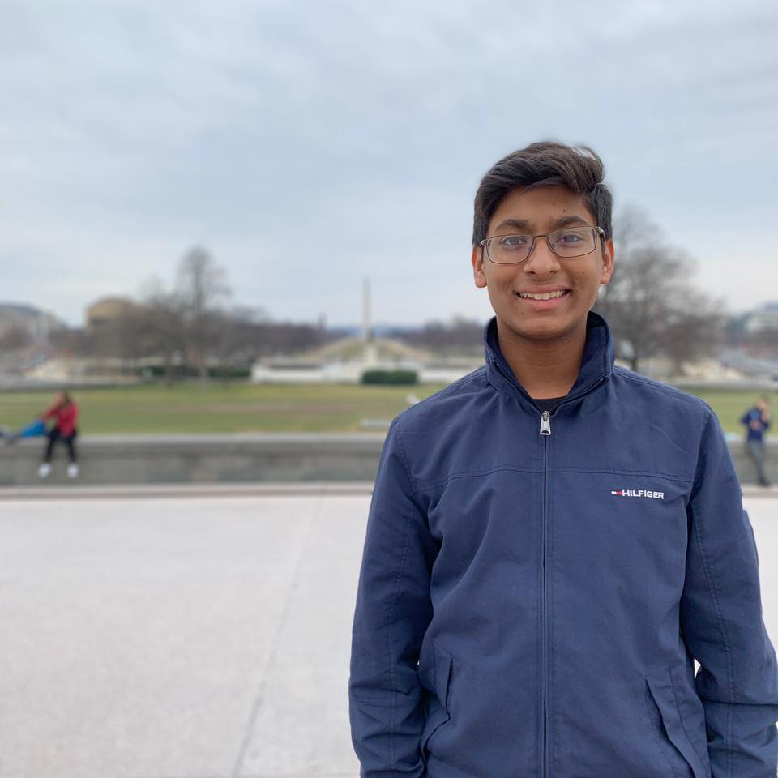

Our Leadership
Archit Mehta
CEO & Founder
Archit is a senior at West-Windsor Plainsboro High School North. Ever since he can remember, he has lived to better the lives of others, to leave the world slightly better off than it was when he entered it. And that’s precisely why he co-founded Junior Coding League. He enjoys helping children discover a passion for programming Aside from Junior Coding League, though, Archit enjoys programming in HTML/CSS/JS/PHP for web development, and Java and Python for scripting and algorithm solving. He has built several tools that do everything from tools to help consumers save money while shopping online to sites that help businesses strategize a reopening in the midst of the coronavirus pandemic. Outside of programming, Archit embraces his passion of helping others as the Speaker of the State Assembly as part of the Junior State of America(JSA) Foundation, where he leads 2,000+ students by implementing solutions through the State Assembly, JSAs chief legislative body. In terms of academic achievement, Archit has won several awards, such as achieving the USACO Gold Division, placing within the top 3 out of 500+ competitors in several cyber security CTF competitions, and winning a hackathon with 400+ competitors.
Archit looks forward to continuing to grow Junior Coding League and making it more successful than ever!
Aneesh Durai
President & Founder
Aneesh is a senior at West-Windsor Plainsboro High School North and is passionate about applications of Mathematics and Computer Science. He co-founded Junior Coding League in his sophomore year and wants to spread his enthusiasm for CS applications by offering students opportunities to explore them. At school, he is an officer for Math Club and Captain of his Future Problem Solving Team through which he has developed a strong passion for problem-solving. Aneesh is a two-time AIME qualifier, a top-ten finisher at MMATHS, a two-time Future Problem Solving International Conference qualifier, and a USACO Gold Division competitor. Outside of school, he participates in the Columbia University Science Honors Program and conducts quantitative research at New Jersey Institute of Technology. He has spent his last summer developing algorithms at a machine learning company.
Aneesh is excited to serve Junior Coding League and inspire the future generation of computer science enthusiasts.
Akash Srinivasan
Chief Operating Officer
Akash is a senior at West-Windsor Plainsboro High School North. He’s highly passionate about Computer Science, especially Artificial Intelligence. In school, he’s President of Humans for Healing and a Relay for Life Club officer. During his sophomore year, he began tutoring in Web Development and Robotics for Junior Coding League to help the next generation of programmers develop effectively. Within Computer Science, he often participates in Capture the Flag tournaments such as PicoCTF, where his team placed in the top 50 high school teams out of thousands of participants. Other than Computer Science, he enjoys public speaking where he can debate about the issues he’s passionate about and meet unique people with differing ideologies. In his free time, he plays video games or watches movies with his friends.
In the future, Akash hopes that Junior Coding League can help students become confident and experienced programmers.

Vignesh Venkat
Chief Financial Officer
Vignesh Venkat is a python specialized Data Scientists. He is the Chief Finance Officer in the Junior Coding League Organization. With projects ranging from scraping data on benign and malignant tumor classification to the prediction of House Values based on a specific set of features. Vignesh has also worked on real-world use cases, such as classifying loan applicants to judge the risks that might come with specific individuals. Other than Computer Science, Vignesh is an avid guitarist and Public Speaker. He loves to discuss other's perspectives on large controversial problems, and trying to use data science to figure out a legitimate solution to those issues. He lives by the motto: "Creativity comes from others" and hopes to impart some of his experience with the JCL Community.